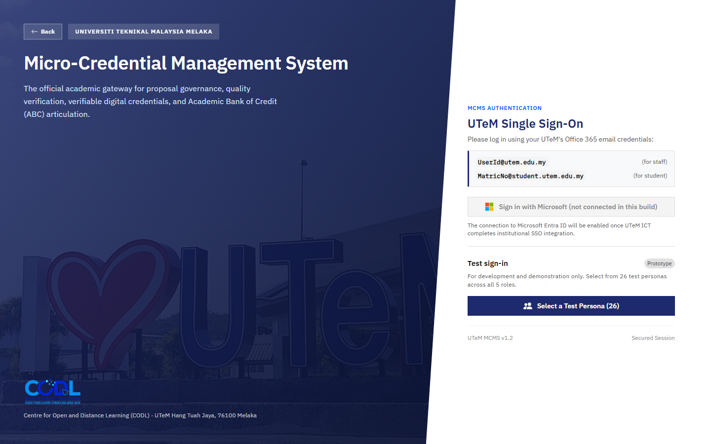
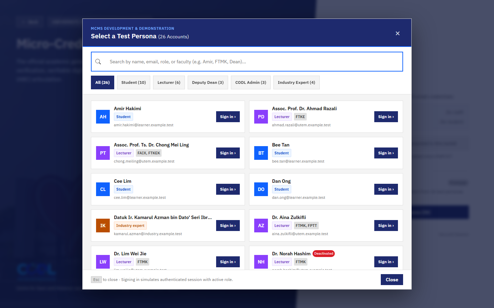

In Version next iteration (v1.5), MCMS runs as a working Laravel 13.38 / PHP 8.3 application backed by MySQL 8.4 LTS:

/signin) with Office 365 credential format guidance and CODL identity.
/signin) used in non-production verification across all roles.Appendices B (170 live screen, tab, dialog, and menu captures) and C (17 live printable A4 document captures) are generated directly from the running Laravel application using Playwright Chromium captures and laid out consistently by manifest.